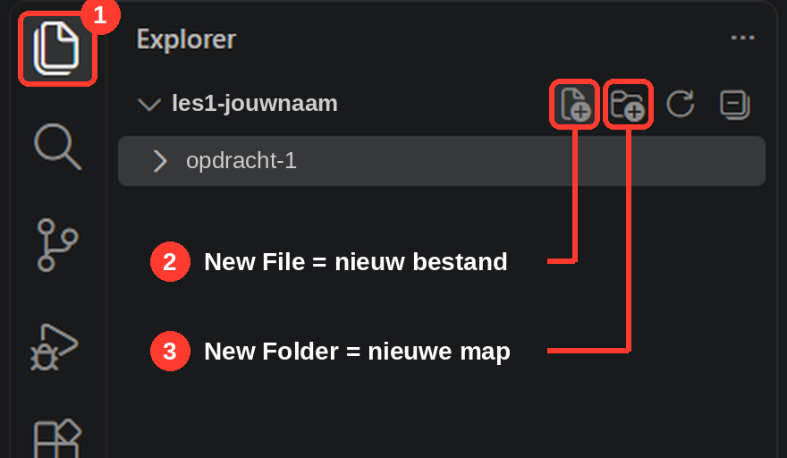

Aan de slag
Hoe werkt een webpagina?
Drie dingen werken samen om een webpagina op je scherm te krijgen.
| Wie | Wat doet het? | Voorbeeld |
|---|---|---|
| HTML | De structuur: wat staat er op de pagina? | Koppen, tekst, plaatjes |
| CSS | De opmaak: hoe ziet het eruit? | Kleuren, ruimte, lettertype |
| Browser | Laat het zien: leest jouw code en tekent de pagina | Chrome |
Vergelijk het met een huis
HTML zijn de muren. CSS is de verf en de inrichting. Zonder CSS staat je huis er wel, maar ziet het er kaal uit.
Stap 1: VS Code installeren
Dit is het programma waarin je je code typt.
- Ga naar code.visualstudio.com. Typ dit adres in Chrome. Geen www ervoor nodig.
- Klik op de grote blauwe knop. Je krijgt vanzelf de versie voor Windows.
- Open het gedownloade bestand. Klik onderin of rechtsboven in je browser op het bestand dat je net downloadde.
- Klik steeds op Volgende. Accepteer de voorwaarden. De standaardinstellingen zijn prima.
- Start VS Code. Je ziet een welkomstscherm. Dat mag je wegklikken.
Gratis en veilig
VS Code is gratis en wordt gemaakt door Microsoft. Je hoeft geen account aan te maken.
Stap 2: Live Server erbij zetten
Hiermee zie je meteen wat je typt, zonder steeds te verversen.
- Open VS Code. Kijk in de balk helemaal links.
- Klik op het blokjes-icoon. Dat is Extensions. Sneltoets: Ctrl + Shift + X.
- Zoek op: Live Server. Typ het in het zoekvak bovenaan.
- Kies die van Ritwick Dey. Er zijn er meer met dezelfde naam. Kijk goed.
- Klik op Install. Klaar. Je hoeft niets in te stellen.
Zo start je Live Server
Rechtsklik op je bestand index.html en kies Open with Live Server. Je pagina opent in Chrome en ververst zichzelf zodra je opslaat met Ctrl + S.
Stap 3: Een vaste plek voor je werk
Kies één plek op je laptop. Dan vind je je werk altijd terug.
- Je bewaart alles in Documenten. Daar kun je makkelijk bij. Open de Verkenner met Windows-toets + E. Links in de balk staat Documenten.
- Elke module krijgt een eigen map. Voor deze module is dat
les1-jouwnaam, met je eigen naam. Bijvoorbeeldles1-sam. - In die map komt een map voor elke opdracht. Die maak je allemaal in opdracht 1.
Documenten/
les1-jouwnaam/
eindopdracht/
opdracht-1/
opdracht-2/
...
opdracht-9/
| Plek | Goed? | Waarom? |
|---|---|---|
| Documenten | Ja | Vind je snel terug, in de Verkenner en in VS Code |
| Downloads | Nee | Daar komt van alles in. Je gooit het makkelijk per ongeluk weg. |
| Bureaublad | Liever niet | Wordt snel rommelig |
| USB-stick | Nee | Stick kwijt of vergeten? Dan kun je niet verder. |
Waarom staat eindopdracht bovenaan?
VS Code zet mappen op volgorde van het alfabet. De e van eindopdracht komt voor de o van opdracht.
Stap 4: Mappen en bestanden maken in VS Code
Je maakt je mappen en bestanden in VS Code zelf. Dan zie je meteen of alles op de goede plek staat.

- Klik links op het icoon met de twee blaadjes. Dat is Explorer, je mappen en bestanden. Sneltoets: Ctrl + Shift + E.
- Ga met je muis over de naam van je map. Er verschijnen vier icoontjes. Het eerste is New File (nieuw bestand), het tweede is New Folder (nieuwe map).
- Typ de naam en druk op Enter. Kleine letters, geen spaties.
Let op waar je nieuwe map komt
Een nieuwe map komt in de map die je net hebt aangeklikt. Klik je eerst op opdracht-1, dan komt je nieuwe map daarin. Wil je hem gewoon in les1-jouwnaam? Klik dan eerst op een lege plek onder je mappen. Staat een map toch verkeerd? Sleep hem naar de lege plek.
Verkeerde naam?
Klik op de map of het bestand en druk op F2. Nu kun je de naam veranderen.
1. Maak je mappen voor module 1
- Open VS Code en kies File > Open Folder. Klik links in het venster op Documenten.
- Klik bovenin op Nieuwe map. Noem hem
les1-met je eigen naam erachter en druk op Enter. - Klik één keer op je nieuwe map en daarna op Map selecteren. Vraagt VS Code of je de makers vertrouwt? Klik op Yes, I trust the authors.
- Maak met New Folder de mappen
opdracht-1tot en metopdracht-9en de mapeindopdracht. - Klik op
opdracht-1en maak met New File het bestand index.html. Typ de regel uit de codehint en sla op met Ctrl + S. - Rechtsklik op index.html > Open with Live Server.
Codehint
<h1>Hallo, ik ben ...</h1>
Klaar als...
Links in VS Code zie je les1-jouwnaam met 10 mappen erin, en index.html staat in opdracht-1. In Chrome zie je de tekst 'Hallo, ik ben ...'. Verander de tekst, sla op, en kijk of de pagina meteen verandert.